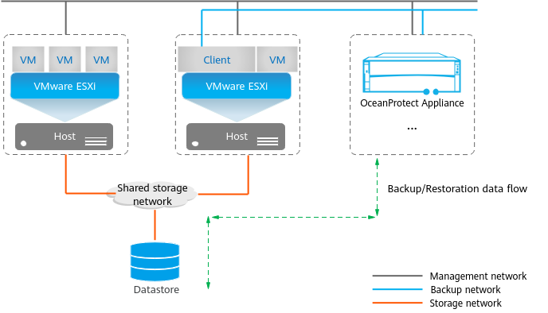

VMware VM backup and restoration support access to virtual disk data in datastores in SAN, Hot-Add, NBD, NBDSSL, or storage-layer transmission mode. Before configuring a backup job, you need to understand VMware transmission modes so that you can select a proper transmission mode and determine the client deployment mode.
In the actual backup process, if the client is deployed on physical servers and the storage-layer backup function is enabled, the system tries each transmission mode in the following sequence: storage-layer > SAN > NBDSSL/NBD; if the client is deployed on VMs and the storage-layer backup function is enabled, the system tries each transmission mode in the following sequence: storage-layer > Hot-Add > NBDSSL/NBD, and uses the first mode that can be successfully used for all disks in the protected VMs for backup and restoration.
SAN Transmission Mode
SAN transmission mode is selected for backup if virtual disks are stored in the FC SAN or iSCSI SAN on the VMware virtualization platform. In this mode, the client must be deployed in the SAN at the production end. The host where the client is installed directly reads SAN storage data for backup and restoration, without the need to transmit any data through an ESXi host and LAN. Therefore, the data transmission efficiency is high and Ethernet resources are not occupied.
Figure 1 shows the client deployment in SAN transmission mode.
Figure 1 Client deployment in SAN transmission mode
To use the SAN transmission mode for backup and restoration, the following requirements must be met:
- The client must run on an independent physical server.
- The physical server where the client is installed must be able to access the datastore where the virtual disks to be backed up reside. The LUN corresponding to the datastore must be mapped to the physical host.
Advantages of the SAN transmission mode:
- Excellent performance: The host where the client is installed directly reads virtual disk data through the SAN. Compared with other transmission modes, the SAN transmission mode delivers excellent backup and restoration performance.
- Independent transmission: In SAN transmission mode, the host where the client is installed is directly connected to the datastore where the VM resides, and data of the production VM is directly read through the SAN. This transmission mode has the minimum impact on the network of the production host and the host where the client is installed.
- The following disk types support backup and restoration in this mode: SCSI, SATA, and IDE.
Disadvantages of the SAN transmission mode:
- High requirements for deploying the client: Additional physical servers are required, and a dedicated SAN must be deployed.
- Only SAN storage supported: If the production storage is not SAN storage, data cannot be backed up or restored in SAN transmission mode.
- Disk provisioning policy that supports backup and restoration: In SAN transmission mode, only thick provisioning quick zeroed disks can be restored. If a VM contains non-thick provisioning quick zeroed disks, the restoration of all disks on the VM will be switched to the NBDSSL transmission mode.
Hot-Add Transmission Mode
When running on a VMware VM, the client creates a linked clone for the target VM to be backed up and mounts the VMDK of the linked clone VM to the host where the client is installed using the Hot-Add function. Then, the client can read the target VM disk copy to complete backup of the target VM. This mode is called the Hot-Add transmission mode.
Figure 2 shows the client deployment in Hot-Add transmission mode.
Figure 2 Client deployment in Hot-Add transmission mode
To use the Hot-Add transmission mode for backup and restoration, the following requirements must be met:
- The client must run on an independent VMware VM.
- The VM running the client must be able to access the datastore where the target virtual disk resides.
- The VMFS block size and version of the datastore where the VM running the client resides must be the same as those of the datastore where the target VM resides.
Advantages of the Hot-Add transmission mode:
Disadvantages of the Hot-Add transmission mode:
- Location requirement for the host where the client is installed: In Hot-Add transmission mode, the host must be able to access the datastore where the virtual disks to be backed up reside.
- Production resources required by the host where the client is installed: The client is deployed on a VM and occupies resources in the production environment, including the CPU, memory, network, and licenses.
- The following disk types support backup and restoration in this mode: SCSI and SATA.
NBD/NBDSSL Transmission Mode
NBD and NBDSSL are the LAN-based transmission modes. The ESXi host reads data from the production storage and then transmits the data to the host where the client is installed through the LAN.
NBD is similar to NBDSSL. The difference is that data is encrypted in NBDSSL transmission mode, but not in NBD transmission mode. The OceanProtect preferentially uses the NBDSSL transmission mode for backup and restoration by default.
Figure 3 shows the client deployment in NBD/NBDSSL transmission mode.
Figure 3 Client deployment in NBD/NBDSSL transmission mode
Advantages of the NBD/NBDSSL transmission mode:
- Flexible deployment: The client can run on independent VMs or independent physical servers.
- Disk provisioning policies that support backup and restoration: All types of thick provision lazy zeroed disks, thick provision eager zeroed disks, and thin provisioning disks can be backed up and restored.
- Multiple production storage types are supported: local disks, SAN storage, and NAS storage.
- The following disk types support backup and restoration in this mode: SCSI, SATA, and IDE.
Disadvantages of the NBD/NBDSSL transmission mode:
Poor performance: ESXi hosts must obtain backup data from the management network in the production environment, seriously affecting the management network.
Storage-Layer Transmission Mode
If LUNs or file systems (only 1.6.0 and later versions support file systems) on the storage device are mounted to the VMware virtualization platform as datastores, select the storage-layer transmission mode for backup. In this mode, the client must be deployed on independent physical servers or independent VMs. The host where the client is installed reads data from the snapshots of the production storage for backup without transmitting any data through the ESXi host. This way, the data transmission efficiency is high and the Ethernet resources of the production host are not occupied.
In storage-layer transmission mode, the client is deployed on independent physical servers or independent VMs. In the example shown in
Figure 4, the client is deployed in independent physical servers.
Figure 4 Client deployment in storage-layer transmission mode
To use the storage-layer transmission mode for backup and restoration, the following requirements must be met:
- The client must run on independent physical servers or independent VMs.
- The physical servers or VMs with the client installed must be able to access production storage devices. The LUN/file system snapshots corresponding to the datastores must be mapped to hosts where the client is installed.
Advantages of the storage-layer transmission mode:
- Flexible deployment: The client can run on independent physical servers or independent VMs.
- Excellent performance: Few resources in the production environment are occupied. VM snapshots are retained for a short period of time. The backup process is decoupled from the original VMs.
- Independent transmission: Hosts where the client is installed are connected to the production storage where the VMs reside to directly read data from the production VMs. The impact on the production storage is the same as that in SAN transmission mode.
- Multiple production storage types are supported: SAN storage and NAS storage.
Disadvantages of the storage-layer transmission mode:
- Complex deployment: When registering a vCenter or ESXi host, you need to add the corresponding production storage devices to the OceanProtect.
- Restrictions on VMs to be backed up: The VMs to be backed up cannot have VM snapshots.
- Total capacity of the source LUNs of the datastores to which VM disks belong: It cannot exceed 15 TB.
Copyright © Huawei Technologies Co., Ltd.